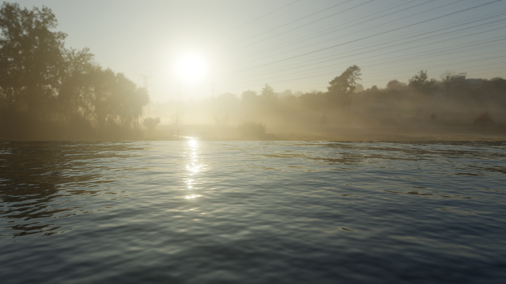

Bio
Hi my name is Nicolas Saffo but I usually just go by Nick. I am 28 years old, well at least I was when I created this page. I recently graduated from the University of North Carolina at Wilmington with a Bachelors in Information Tech as-well-as a Minor in Cyber Security. I grew up in Wilmington North Carolina where I still reside.
I enjoy doing things that envolve a level of skill, technique, and problem solving to accomplish. I am a competitive person by nature and always like to do my best in work or play to reflect myself. I really enjoy creating things online whether they be art or webpages for myself like this one. I like to find good open source assets like GitHud, Unity, Krita, ChatGPT or Canva to make my life easier. I play sports like Golf and Tennis from time to time. I also like the simpler things in life such as a hot cup of coffee in the morning, the sound of rain, deep conversations and a nice late night drive while there is no one on the road.
If you know me you know that I have always been a gamer. I have played videogames of many different types and genres. I have played so many good games and believe that I have like 20 games tied for 5th place but here is my top 5 list.
- Souls Games/ Elden Ring
- Fallout 4
- Call of Duty DMZ
- Bioshock
- Battlefield 4
I am a decently travelled individual. I have been lucky enough to have the opportunity to visit 8 different countries in Europe and hope to add the that list. Japan is my
next destination, it has been high on my bucket list for a while now. My familial heritage traces back to Ikaria, Greece, connecting me to a rich culture in which i've have had the honor or
getting to experience. Here is a picture from the island of Ikaria that I took in 2023 on my last visit there.

Recent History
Summer of 2023- I have tasked myself with trying to create a simple application. I began working on what I call EngagePortal at the beginning of August. Basically it's a Wi-Fi access solution for businesses, it
creates a captive portal when trying to access a Wi-Fi and redirects to a page connected to the Instagram Graph IPA. Then JavaScript runs a query to see the users follower list and verify if they are following.
 I've learned to use
tools, including Node.js, Express, Heroku, Instagram API, HTML, CSS, and JavaScript to build this system. The process involves creating a custom authentication flow, integrating with router captive portals, and verifying user actions
through server-side scripting. I even had to create a business entity to use the Instagram Graph IPA. That being said there is still a lot to do to complete EngagePortal. You can click on the image to view the basic front end of the app.
I've learned to use
tools, including Node.js, Express, Heroku, Instagram API, HTML, CSS, and JavaScript to build this system. The process involves creating a custom authentication flow, integrating with router captive portals, and verifying user actions
through server-side scripting. I even had to create a business entity to use the Instagram Graph IPA. That being said there is still a lot to do to complete EngagePortal. You can click on the image to view the basic front end of the app.
Summer 2023- While I was on vacation I needed something to do on my down time so I decided to start exploring different AI tools. I experimented with Open AI's ChatGPT a little bit and used it to come up with some ideas. I ended up
using another app called MidJourney to make a coloring book. MidJourney is an AI image generator that renders based on a prompt.  I made a 75 page adult/kid coloring book for under 10 dollars. It is currently being published to Amazon for sale
and you can click this image to view it when it's up.
I made a 75 page adult/kid coloring book for under 10 dollars. It is currently being published to Amazon for sale
and you can click this image to view it when it's up.
Right after I graduated, about a year ago. I discovered that I really liked different aspects of digital art. I have always been into games and anime so I looked into 3D modeling and animation as potential careers. I ended up downloading Blender and teaching myself through various youtube tutorials and videos. I enjoyed making the donut and other basic objects but after a while I started to tackle harder things like space ships and rooms with furnature. I made a couple houses for a game called VR Chat. I have also created some pretty cool environment renders like the one.  Iv'e made cool things from environments to books that open and close, I made a flying machine and an audio visualizer, Iv'e even taken some blueprints to houses and made them. You can check out some of that stuff under the portfolio tab.
Another hobby of mine that I started to enjoy right around the same time is video editing, or at least some amature version of it. I started making or taking bits of videos or shows that I was watching at the time and editing them with music. I enjoy finally getting the clips arranged in just the right way to the music and it just makes it hit perfect. Sometimes I will come up with cool tricks to do and sometimes the edits just seem to make themselves and fall together. For a while I was just doing edits for shows I was watching which you can find here.
Then I decided to combine this with gaming and created my own gaming channel. It has only been live for about a month or 2 now but I am starting to learn a lot about Youtube. I focus mainly on short form content but I am about to begin streaming as well. You can find that channel here. If you are interested in checking out my editing you can find it in the portfolio tab or just going to either of those channels.
This last one kind of comes with the youtuber territory but I also create thumbnails for my videos. I have been thinking about trying to find work making those to but haven't made any moves on that yet. Examples of those can be found under the Portfolio tab as well.
Goals
My main goal at this moment is to find a career that matters to me and that I matter to as well. I know that career must exist somewhere in the information technology or digital art/media industry. I enjoy doing these side projects and challenging myself to learn new skill in these fields for it not to . This is partly the reason I am trying to build up these different skill sets.
Another goal of mine is I really want to finish the EngagePortal app I have been working on. All i need to do now is register a business entity with Instagram API so i can use the Graph API. This will allow me to have access to follower lists. After that all I need to do it the networking side and test it on my home router.
Freedom to travel and visit different geographic locations is another goal of mine. I like to witness history, different cultures and architecture. I also like to just get away once a year. I'd like to get to live in another country for at least 2 years sometime sooner then later in my life. I have never moved outside of Wilmington but I have this itch to do so that gets stronger every year.